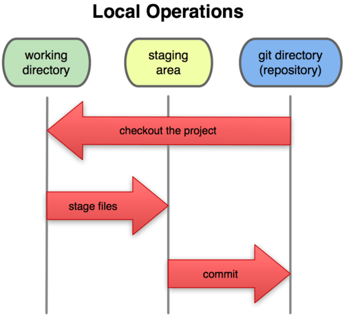
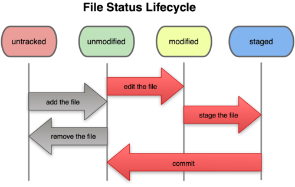
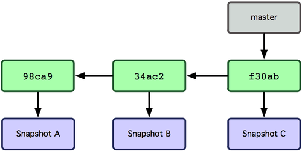
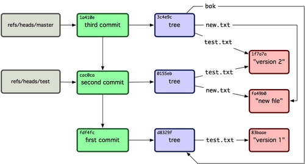
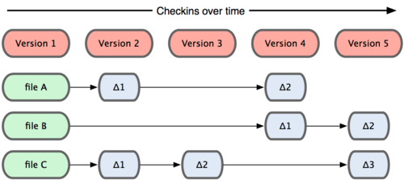
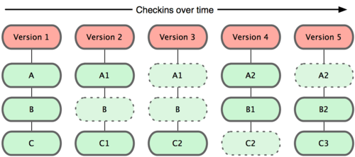
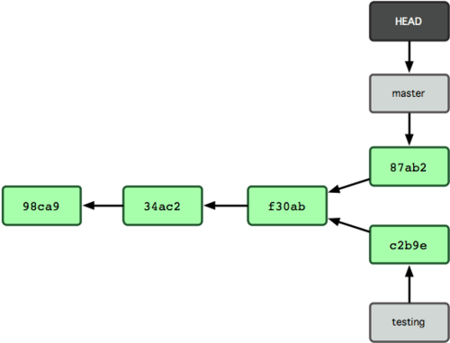
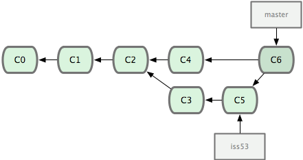

git brief introduce
- offline coding
- branch
- speed
- social coding (github)
1.Intro 2.Basic 3.Common 4.Improved
Pictures are from internet and commands will be explained when I am typing it.
1. Intro
(1) git and svn
some like svn

git

(2) git install
(3) git working directory, starting area, git directory(repository)

2. Basic
(1) git init, git clone, git checkout .git directory .gitignore file
(2) file status / git status

(3) git diff
(4) git commit
commits

relationship

files


(5) git log
(6) gitk
3. Common
(1) git branch dev , git checkout dev

(2) git merge
(3) git fetch(4) git push
(5) git pull
(6) git fetch
(7) git remote
(9) git tag
(10) git config
(11) git rm
4. Improved
(1) git commit --amend
(2) git cherry-pick
(3) git stash
(4) git reset
(5) git revert
(6) git reflog
(7) git alias
(8) git rebase
edit squash delete
(9) git blame
(10) git filter-branch
(11) githug git-extra